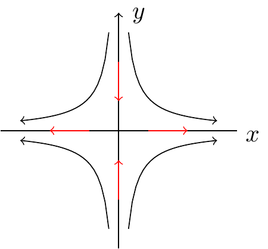

Chapter 3 Higher-dimensional dynamics
Covers Chapter 2 Section 2.5 Example 2.13 to Section 2.6 Example 2.20 of Chapter 2 (Alligood, Sauer, and Yorke 2000).
3.1 Example
Let us apply Theorem 2.1 to an example we encountered earlier on: the Hènon map.
Example 3.1 (The Hènon map II)
The Hènon map is the map \(\vec{f}_{a,b}(x,y) = (a - x^2 + by, x)\). For this example we take \(a=0\) and \(b = 0.4\) to get:
\[\vec{f}(x,y) = \vec{f}_{0,0.4}(x,y)= (-x^2 + by, x).\]
We compute the fixed points by solving the equation \[ \vec{f}(x,y) = (x,y). \]
From the second coordinates we find that \(x= y\); the first coordinate then gives \(x^2 - bx + x = 0\).
Solving this gives two solutions, \(x = y = 0\) and \(x = y = b-1\).
To investigate the stability of the fixed point we need to compute the Jacobian of \(\vec{f}\) at each of the two fixed points and compute the eigenvalues of the resulting two matrices. We write \(\vec{f} = (f_1(x,y), f_2(x,y))\) where \(f_1(x,y) = -x^2 + by\) and \(f_2(x,y) = x\).
Thus,
\[ \jacob{(x,y)} = \begin{pmatrix} \pder{f_1}{x} & \pder{f_1}{y} \\ \pder{f_2}{x} & \pder{f_2}{y} \end{pmatrix} = \begin{pmatrix} -2x & b \\ 1 & 0 \end{pmatrix} \]
For \(x = y= 0\):
We have \[\jacob{(0,0)} = \begin{pmatrix} 0 & b \\ 1 & 0 \end{pmatrix} \]
We find the eigenvalues by solving the characteristic equation: \(\det(\lambda I - \jacob{(0,0)}) = 0\). This gives:
\[ \begin{vmatrix} \lambda & -b \\ -1 & \lambda \end{vmatrix} = \lambda^2 - b = 0 \]
This has solutions \(\lambda = \pm \sqrt{b}\). Clearly the magnitude of the eigenvalues, \(\sqrt{0.4}\), is strictly less than \(1\) and so we conclude that \((0,0)\) is a sink.
For \(x = y = b-1\):
We have \[\jacob{(-3/5,-3/5)}=\begin{pmatrix} 2(1-b) & -b \\ -1 & 0 \end{pmatrix} \]
We solve the characteristic equation as before.
\[ \det(\lambda I - \jacob{(b-1,b-1)}) = \begin{vmatrix} \lambda + 2(b-1) & b \\ 1 & \lambda \end{vmatrix} = \lambda^2 + 2(b-1) \lambda - b = 0. \]
This gives \[\lambda = (1-b) \pm \sqrt{(b-1)^2 + b} = (1-b) \pm \sqrt{ b^2 - b + 1}.\]
For \(b = 0.4\), we get eigenvalues \(\lambda_1 = (3 + \sqrt{19})/5\) and \(\lambda_2 = (3- \sqrt{19})/5\). Thus by Theorem 2.1 \((-0.6, -0.6)\) is a saddle point.
To get an idea of the dynamics of the Hènon map, we plot below a bifurcation diagram where we keep \(b\) fixed at \(0.4\) and allow \(a\) to vary between \(0\) and \(1.25\). On the \(y\) axis we plot only the \(x\) values after sufficiently many iterates have been obtained. Feel free to experiment with the code.
Figure 3.1: Bifurcation diagram of Hènon’s map
We make some observations on the bifurcation diagram 3.1.
- The bifurcation diagram shows striking similarities with the bifurcation diagram of the logistic map (Figure 2.3).
- At a=0.27, a period-doubling bifurcation occurs: the fixed point loses stability and a period 2 orbit (which is a sink) emerges.
- The period \(2\) orbit becomes unstable at 0.85, at which point a period \(4\) orbit, an attracting orbit, emerges and so on.
- In general, for \(b=0.4\) and \(a> 0.85\), the attractors of the Hènon map become more complex.
3.1.1 Stable and Unstable Manifolds
In order to explore the dynamics of dynamical systems corresponding to higher dimensional maps, we require some more terminology – the notion of a manifold.
Loosely speaking an \(n\)-dimensional manifold is a set of point whose geometry/topology “locally resembles” \(\R^{n}\). That is a small segment of the manifold looks like a small segment of \(\R^{n}\). For instance a \(1\)-dimensional manifold “locally resembles” a curve.
Examples of one dimensional manifolds are a circle “o” or the disjoint union of two circles. The letters “A” and “X” are not manifolds, for instance, a small neighbourhood at the centre of “X” where different line segments meet does not resemble a line segment. The letter \(S\) is not a manifold as zooming in near either of its end points, we resemble a half line instead of a line. If we remove the two end points of \(S\), then it becomes a manifold.The letter \(S\) with its end points is a so-called manifold with boundary.
Examples of 2-dimensional manifolds are spheres, tori since locally they look like a plane. Note that the unions of two manifolds is again a manifold.
Let us now apply these definitions to dynamics of higher-dimensional maps. Recall that a fixed/periodic point of a map \(f\) is called a saddle/periodic saddle point if it has at least one attracting direction and one repelling direction. We can consider the set of all points which are attracted to the saddle point under iterations of the map, and likewise the set of all points which are repelled from the saddle under iterations of the map. These are respectively termed the stable manifold and unstable manifold of the saddle point \(p.\) The terminology is not accidental and we shall later see why stable and unstable manifolds of a fixed point are indeed manifolds.
For the moment let us illustrate a saddle point with an example.
Example 3.2 (Movement towards and away from a saddle point)
Consider the map \(\vec{f}: \R^2 \to \R^2\) given by \((x,y) \mapsto (2x, y/2)\). This map has one fixed point at \(x = y = 0\).
The Jacobian matrix of \(\vec{f}\) at the point \((0,0)\) is the matrix
\[\begin{pmatrix} 2 & 0 \\ 0 & 1/2 \end{pmatrix} \]
which has eigenvalues \((2, 1/2)\) (eigenvectors corresponding to the \(x\) and \(y\) axis respectively). Thus we see that along the \(x\) axis we have movement away from the saddle point at the origin and along the \(y\) axis we have movement towards the origin.

3.2 Stability of manifolds associated with a saddle
In this module most higher dimensional maps we consider will be one-to-one/injective. This property means that for most functions we consider, their inverses exist.
Definition 3.1 Let \(\vec{f}\) be a map on a subset of \(\R^{n}\). Then \(\vec{f}\) is called one-to-one/injective if for \(\vec{v}_1, \vec{v}_2\) in the domain of \(\vec{f}\)
\[ \vec{f}(\vec{v}_2) = \vec{f}(\vec{v}_2) \implies \vec{v}_1 = \vec{v}_2.\]
That is, \(\vec{f}\) is injective if and only if distinct points in its domain have distinct images.
The one-to-one property means that we can “reverse” the map in order to find the inverse of \(\vec{f}\). That is if \(\vec{f}(\vec{v}_1) = \vec{v}_2\), then \(\vec{f}^{-1}(\v{v}_2) = \v{v}_1\). Being one-to-one guarantees that there is no ambiguity in this definition; there is one and only one element in the domain of \(\vec{f}\) whose image under \(\vec{f}\) is \(\vec{v}_2\).
Let us now formally define stable and unstable manifolds of a saddle fixed/periodic point.
Definition 3.2 (Stable and unstable manifolds) Let \(\vec{f}\) be a (smooth) one-to-one map on a subset of \(\R^{n}\) and let \(\vec{p}\) be a saddle fixed or saddle periodic point of \(\vec{f}\).
The stable manifold of \(\vec{p}\) denoted \(\stab{\vec{p}}\) is the set of points \(\vec{v}\) in the domain of \(\vec{p}\) such that
\[ \lim_{k \to \infty} |\vec{f}^{k}(\vec{v}) - \vec{f}^{k}(\vec{p})| = 0. \]
The unstable manifold of \(\vec{p}\) denoted \(\unstab{\vec{p}}\) is the set of points \(\vec{v}\) in the domain of \(\vec{p}\) such that
\[ \lim_{k \to \infty} |\vec{f}^{-k}(\vec{v}) - \vec{f}^{-k}(\vec{p})| = 0. \]
Notice that the unstable manifold of \(\vec{p}\) is simply the stable manifold of \(\vec{p}\) under the inverse map. Also observe that \(\stab{\v{P}}\) and \(\unstab{\v{p}}\) both contain \(\v{p}\).
3.2.1 Inverse Maps – a reminder
As discussed earlier on, for a one-to-one map \(\vec{f}\) on a subset of \(\R^{n}\) its inverse map \(\vec{f}^{-1}\) exists. In particular such a map \(\vec{f}\) is called invertible.
Example 3.3
Consider the map \(\vec{f}_{1}: \R^2 \to \R^2\) by \((x,y) \mapsto (x^2, y^2)\). This is not a one-to-one map on \(\R^2\), for instance \(\vec{f}_1(-1, -1) = \vec{f}_1(1, -1) = \vec{f}_1(-1,1)\) and so on. If, however, we restrict the domain to the set \(\R^{2+}\) of pairs of positive real numbers, then \(\vec{f}\) is indeed one-to-one (no two distinct positive real numbers square to the same value). The inverse of \(\vec{f}_{1}\) as a map on \(\R^{2+}\) is simply \(\vec{f}_1^{-1}(x,y) = (\sqrt{x}, \sqrt{y})\).
The map \(\vec{f}_{2}: \R^2 \to \R^2\) by \((x,y) \mapsto (x^3, y^3)\) is a one-to-one map. Now two distinct real numbers cube to the same value. The inverse map of \(\vec{f}_{2}\) is given by taking cube roots. That is \(\vec{f}_2^{-1}(x,y) = (\sqrt[3]{x}, \sqrt[3]{y})\).
How do we compute the inverse map in general? In general we make use of the one-to-one property as follows. Suppose \(\vec{f}^{-1}(\vec{v}_1) = \v{v}_2\), then \(\vec{f}(\vec{v}_2) = \v{v}_1\). We then solve the latter equation to obtain the coordinates of \(\v{v}_2\) in terms of the coordinates of \(\v{v}_{1}\). Let us illustrate this with an example.
Example 3.4
Let \(\vec{f}= (x+2y, x^3)\) be a map on \(\R^2\). Let \((x_1, y_1)\) be such that \(f(x_1, y_1) = (x, y)\) (note that \(\v{f}^{-1}(x,y) = (x_1, y_1)\) necessarily as \(\v{f}\) is one-to=one). Then
\[\begin{align*} &x = x_1 + 2y_1\\ &y = x_1^3 \end{align*}\]
Thus we get
\[\begin{align*} &x_1 = y^{1/3}\\ &y_1 = (x - x_1)/2 = (x -y^{1/3})/2 \end{align*}\]
Therefore \(\v{f}^{-1}(x,y) = (x_1,y_1) = (y^{1/3}, (x- y^{1/3})/2)\). The reader can verify that \(\v{f}(\v{f}^{-1}(x,y)) = (x,y)\).
3.2.2 How do we characterise the stable and unstable manifolds of a saddle?
Identifying the stable and unstable manifolds of a saddle fixed point using Definition 3.2, in general, is quite tricky especially when we have no nice closed form expression for \(\v{f}^{k}(\v{x})\) and \(\v{f}^{-k}(\v{x})\). However, Definition 2.7 gives us a clue. The stable manifold must be tangent, at the saddle point, to the line that passes through the saddle in the direction of the eigenvector corresponding to the (contracting) eigenvalue which is strictly less than \(1\); the unstable manifold must be tangent at the saddle point to the line that passes through the saddle in the direction of the (expanding) eigenvector corresponding to the eigenvalue which is strictly larger than \(1\). This together with the fact that that stable and unstable manifolds of saddles are indeed manifolds can be enough. For example if we know that the stable and unstable manifolds must be \(1\)-dimensional manifolds, then all we need to do is find a curve which contains the saddle, is tangent to the relevant line and satisfies the relevant condition in Definition 3.2. In general though, we will need to estimate the manifolds of the saddle via some computational means.
If we restrict simply to the plane, then with the aid of the Stable Manifold Theorem1, we can say quite a bit.
Plane Maps
For a map \(\v{f}\) of the plane, as a consequence of the Stable Manifold Theorem, stable and unstable manifolds of a saddle fixed point \(\v{p}\) are always one-dimensional manifolds i.e. either straight lines or curves. Therefore, in the plane, in order to identify the stable and unstable manifold of a saddle we need to find a one-dimensional manifold \(C\) satisfying the following conditions:
- \(C\) passes though the saddle,
- \(C\) is invariant under \(\v{f}\) and \(\v{f}^{-1}\), that is \[C = \v{f}(C) = \v{f}^{-1}(C),\]
- \(C\) is tangent at the saddle either
- to the line through the saddle in the direction of the contracting eigenvector (if \(C\) is the stable manifold), or,
- to the line through the saddle in the direction of the expanding eigenvector (if \(C\) is the unstable manifold),
- For all \(\v{v} \in C\) either \[\lim_{k \to \infty} |\v{f}^{k}(\v{v}) - \v{f^{k}}(\v{p})| = 0\] (if \(C\) is the stable manifold) or \[\lim_{k \to \infty} |\v{f}^{-k}(\v{v}) - \v{f^{-k}}(\v{p})| = 0\] (when \(C\) is the unstable manifold.)
For linear maps (only linear terms in the definition of the map; alternatively the usual definition of linear maps from MT2501/MT3501), Definition 2.7 gives the whole answer in \(n\)-dimensions and not only in the plane.
Linear Maps
For a linear map, in 2-dimensions the eigenvector corresponding to the contracting eigenvalue determine the stable manifold — the line through the saddle point in the direction of the eigenvector; the eigenvector corresponding to the expanding eigenvalue determines the unstable manifold — the line through the fixed point in the direction of the eigenvector. In higher-dimensions the stable manifold is determined by the subspace spanned by the contracting eigenvectors (we translate so that the origin is moved to the saddle fixed point) and the unstable manifold is determined by the subspace spanned by the contracting eigenvectors (translate such that the origin is moved to the fixed point).
Let us do some examples to illustrate this.
Example 3.5
Consider the linear map \(\v{f}(x,y) = (2x, y/2)\) from Example 3.2. We showed that \((0,0)\) is a saddle point of \(\v{f}\). In particular, we showed that the Jacobian of \(\v{f}\) at \((0,0)\) has eigenvalues \(2, 1/2\) with corresponding eigenvectors \(\begin{pmatrix} 1 \\ 0 \end{pmatrix}\) and \(\begin{pmatrix} 0 \\ 1 \end{pmatrix}\). We concluded that points lying on the \(x\)-axis move away from the origin under iterations of the map \(\v{f}\) while points lying on the \(y\)-axis move towards the orgin under applications of the map \(\v{f}\). From this it follows that the \(x\)-axis is the unstable manifold/outgoing direction of the saddle point \((0,0)\) and the \(y\)-axis is the stable manifold/incoming direction of \((0,0)\).
Example 3.6
Let us again consider a linear map \(\v{f}(x,y) = (-2x + 5y/2, -5x + 11y/2)\). The fixed points of \(\v{f}\) are found by solving \(\v{f}(x,y) = (x,y)\) which gives \((0,0)\) as the unique fixed point. The Jacobian of \(\v{f}\) is simply the matrix of coefficients of \(\v{f}\) since \(\v{f}\) is a linear map. That is
\[ \jacob{(0,0)} = \begin{pmatrix} -2 & 5/2 \\ -5 & 11/2 \end{pmatrix} \]
We find the eigenvalues in the usual way to be \(0.5\) and \(3\). The eigenvector corresponding to eigenvalue \(\lambda \in \{0.5, 3\}\) can then be found by solving the equation \((A- \lambda I) \vec{v} = \vec{0}\) where \(A = \jacob{(0,0)}\). This gives eigenvectors \(\begin{pmatrix}1 \\ 1 \end{pmatrix}\) and \(\begin{pmatrix} 1 \\ 2 \end{pmatrix}\).
Thus, we see that points on the line \(y = x\) corresponding to the first eigenvalue move closer to the origin under iterations of the map \(\v{f}\) since such vectors are scaled by a factor of \(0.5\). Points on the line \(y = 2x\) (that is the set of points \(\left\{t \begin{pmatrix} 1 \\ 2 \end{pmatrix} : t \in \R \right\}\)) move away from the orgin under applications of \(f\) as they are scaled by a factor of \(3\).
Therefore the line \(y=x\) is the stable manifold of the saddle \((0,0)\) and the line \(y=2x\) is the unstable manifold of the saddle \((0,0)\).
Figure 3.2: Stable and unstable manifolds of a regular saddle
Example 3.7
We consider again a linear map \(\v{f}(x,y) = (2x+5y, -0.5y)\). This has a fixed point at \((0,0)\). Once more we compute the eigenvalues and eigenvectors of the Jacobian of \(\v{f}\) at the fixed points (just the matrix of coefficients for a linear map) using the usual methods of linear algebra. We get eigenvalues \(2, -0.5\) and corresponding eigenvectors \(\begin{pmatrix} 1 \\ 0 \end{pmatrix}\) and \(\begin{pmatrix} 2 \\ -1 \end{pmatrix}\).
We see that the line \(y = -x/2\) in the direction of the vector \((2, -1)\) is the stable manifold of the saddle \((0,0)\) — points on this line move towards the origin under iterations of \(\v{f}\). The \(x\)-axis (the line \(y=0\)) is the unstable saddle points on this line move away from the origin under iterations of the map.
Notice the new interesting behaviour that occurs on the stable manifold of \((0,0)\). On each iteration of the map, a point on the saddle flips from one side of the origin to another. Generally this behaviour occurs happens for all fixed points for which the Jacobian has negative eigenvalues.
A saddle with at least one negative eigenvalue is sometimes called a flip saddle.
Figure 3.3: Stable and unstable manifold of a flip saddle
3.3 Problem Sheet 3
For week 4.
The Hènon map is defined by \[\v{f}(x,y) = (a-x^2 + by,x)\] with real parameters \(a\) and \(b\).
- Show that the two fixed points of the Hènon map are given by \[\v{p}_{+} = (x_{+}, x_{+}), \quad p_{-} = (x_{-}, x_{-})\] with \[ x_{\pm} = \frac{1}{2} \left(b - 1 \pm \sqrt{(b-1)^2 + 4a} \right), \quad (b-1)^2 + 4a \ge 0.\]
- Investigate the stability of these fixed points for \(b=1\) and \(a > 0\) and classify them as sinks, sources or saddles.
References
We unfortunately do not cover the Stable Manifold Theorem in this module however a proof can be found in Chapter 10 of (Alligood, Sauer, and Yorke 2000).↩︎